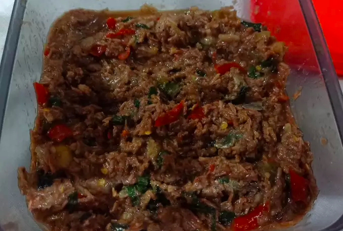

Pengertian Makanan Khas Daerah
Makanan khas daerah adalah makanan yang biasa di konsumsi di suatu daerah. Karakter masakan di suatu daerah biasanya mencerminkan karakter masyarakatnya.
- Jenis Makanan
- Beberapa Makanan Khas Daerah Bima
- Uta Sepi Tumis
- Uta Sepi Tumis merupakan makanan khas Bima yang menggunakan bahan dasar udang rebon yang ditumis dengan bumbu seperti lengkuas, cabai, daun kemangi, minyak goreng, air, sereh, tomat, dan asam muda.
-
- Bingka Dolu
- Bingka Dolu merupakan salah satu kue khas Bima yang tidak boleh dilewatkan. Kue ini memiliki tekstur lembut dan kenyal. Kue berbentuk bunga ini sangat disukai oleh masyarakat sehingga dapat ditemui dengan mudah baik di pedagang di jalanan maupun pasar tradisional.
- Uta Maju Puru
- Masyarakat setempat menyebutnya dengan nama uta maju puru. Uta maju puru diolah dengan cara membiarkan daging rusa didendeng dan dibakar dengan berbagai macam bumbu sampai matang. Rasa dari uta maju puru ini tentunya sangat gurih dan lezat. Proses pengawetan menjadi dendeng-lah salah satu alasan mengapa daging rusanya terasa enak. Mau mencoba uta maju puru khas Bima ini?

Sepi


Pesan.
facebook
whatsaap
Jln.lapangan putih
P: (123) 456-7890
whatsaap
Jln.lapangan putih
P: (123) 456-7890